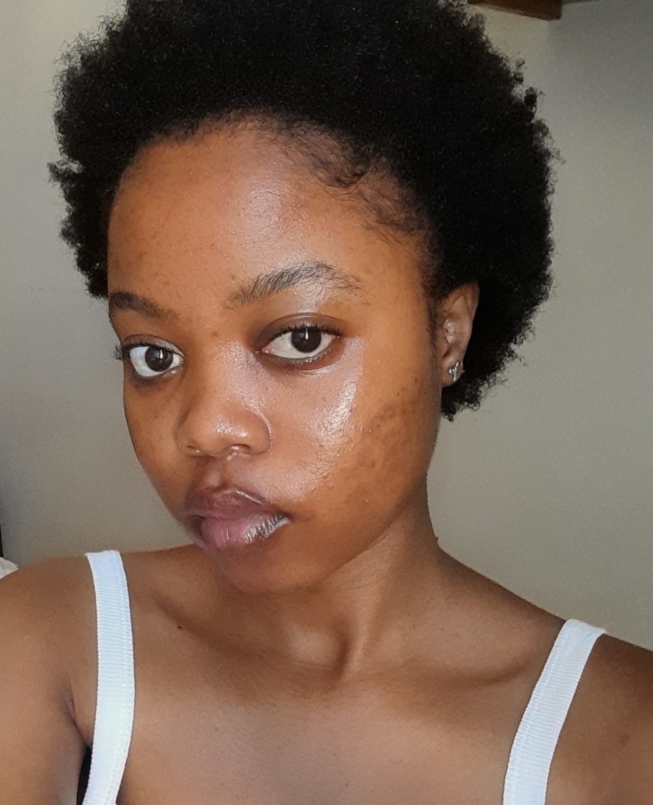
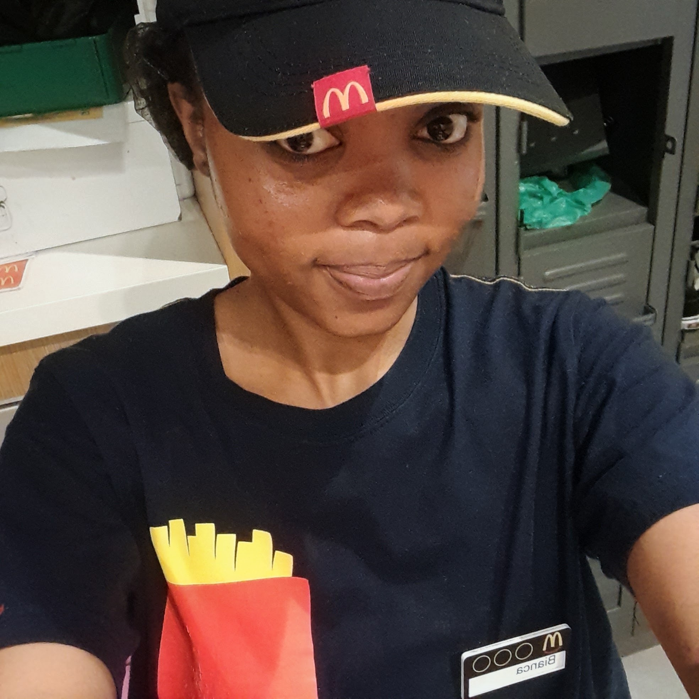
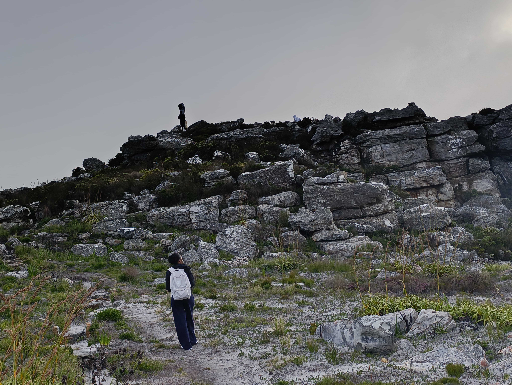
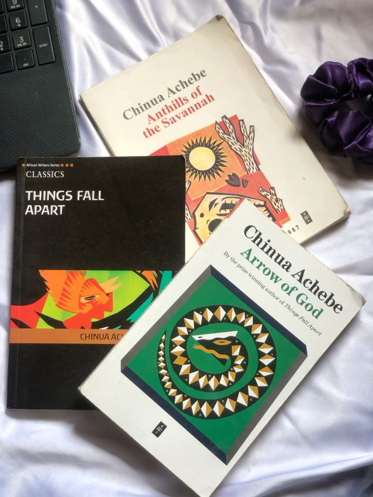
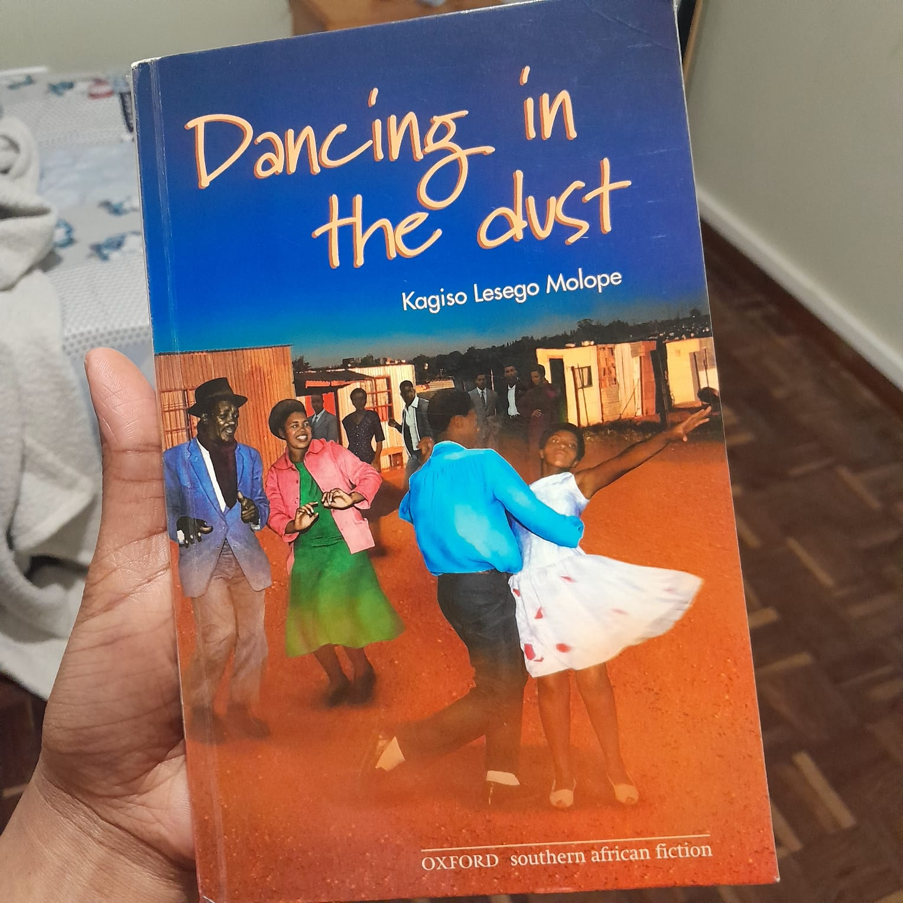
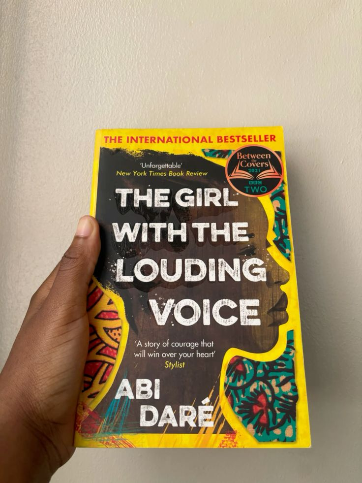
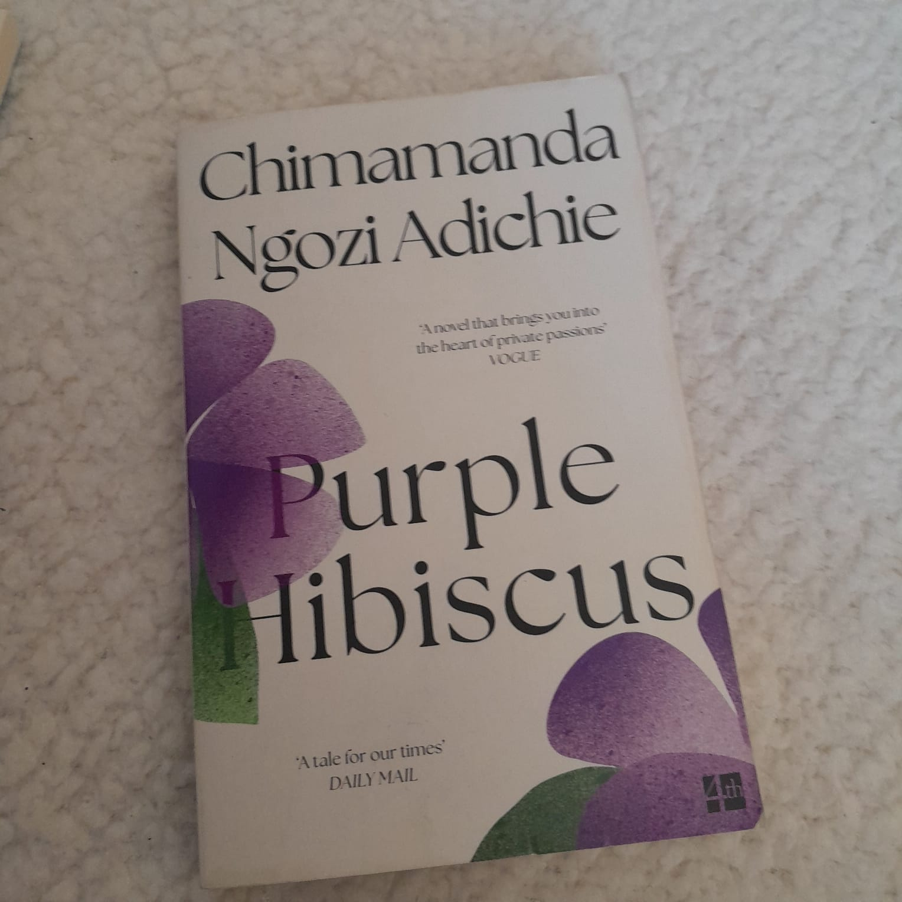
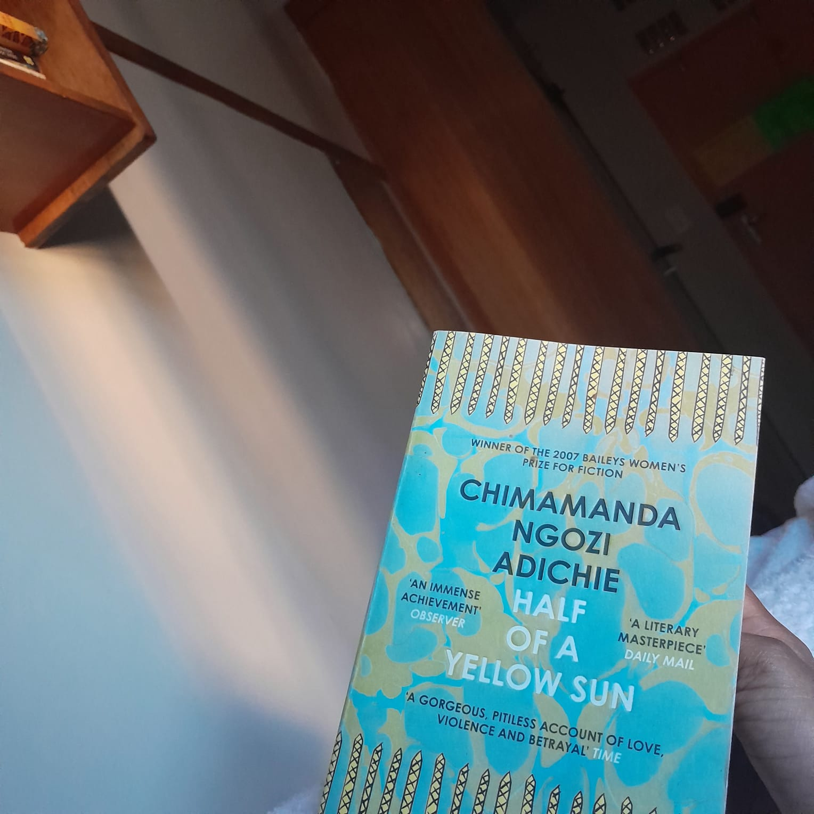

Business
Analysis
Understanding business needs, analysing processes and translating problems into practical system requirements.
An interdisciplinary thinker with a love for technology, people and storytelling.
I'm a final-year Bachelor of Arts student at the University of Cape Town, majoring in Information Systems and Film & Television Studies. My interests sit at the intersection of business, data, design and creativity. I enjoy understanding how things work, identifying problems and finding practical ways to make them better. Whether I'm analysing a business process, working with data, designing an interface or developing a creative idea, I bring curiosity, attention to detail and a willingness to learn.

WHAT I BRING TO THE TABLE
My academic background has equipped me with skills that translate across different industries and roles. These are four areas where I can apply what I've learned.
Understanding business needs, analysing processes and translating problems into practical system requirements.
Bringing research, visual communication, writing and storytelling into creative projects and content.
MY TOOLKIT
THE EXPERIENCE
My experience spans customer service, hospitality, tutoring and technical learning. Each opportunity has taught me something different.
Worked across cashier, waiter and barista responsibilities in a fast-paced, customer-facing environment.
One of my favourite achievements was completing my barista training. I enjoyed learning how to prepare different coffees and developing my latte art skills.

Completed a 32-credit Full Stack Developer programme covering web development fundamentals and programming concepts.
Supported fellow learners through individual and group tutoring in preparation for their Matric examinations.
THE ACADEMIC SIDE
Bachelor of Arts
Majors:
Information Systems
Film & Television Studies
Academic highlight:
72% average across second-year
Information Systems courses.
THINGS I'VE WORKED ON
TEAM PROJECT · 2026
A system developed for the Western Cape Government to improve educational data capture and reporting. My contributions included business analysis, modelling, UI design and documentation.
Explore Project ↗PERSONAL PROJECT
A platform concept exploring how township residents can discover local businesses, services and community information.
Explore Project ↗CREATIVE & ACADEMIC WORK
A collection of screenwriting, filmmaking, research and critical analysis developed through my Film & Television Studies degree.
Explore My Work ↗OFF THE CLOCK
When I'm not studying, coding or working on a project, you'll probably find me reading a book or exploring a hiking trail.
I love reading, particularly African literature. I'm drawn to stories that explore identity, culture, history and the complexities of everyday life.

Hiking gives me a chance to disconnect, appreciate nature and explore new places. Some of my favourite experiences have been on Cape Town's mountain trails.
THE BOOKSHELF
A little glimpse into my reading life. These are some of the books I've read, along with my current read.





A LITTLE FUN FACT
This portfolio is one of my personal projects. I designed and coded it using HTML, CSS and JavaScript, bringing together my interest in development, design and storytelling.
WHAT'S NEXT?
I'm interested in opportunities where I can contribute, learn and grow, whether that's through business analysis, data, design, technology or creative work.
Get in Touch ↗